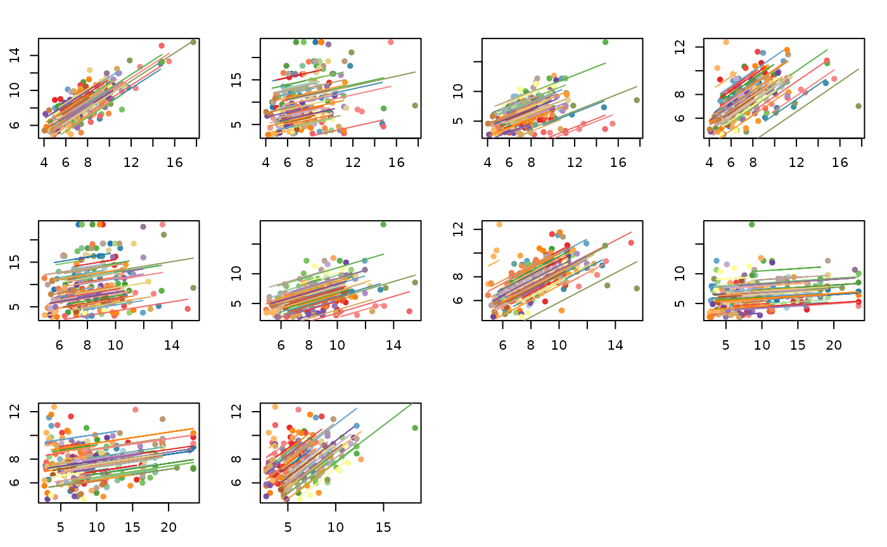
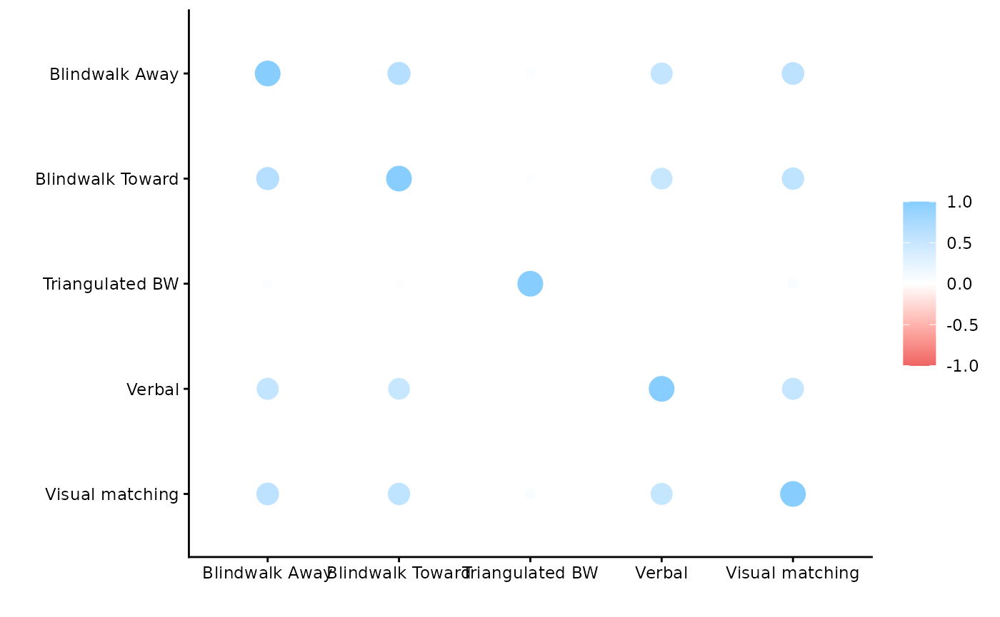

Correlation Matrix using rmcorr_mat
Jonathan Bakdash and Laura Marusich
2026-04-15
Source:vignettes/rmcorr_mat.Rmd
rmcorr_mat.RmdRunning Examples Requires corrplot (Wei and Simko 2021) and corrr (Kuhn, Jackson, and Cimentada 2025)
#Install corrplot and corrr
install.packages("corrplot")
install.packages("corrr")
require(corrplot)
require(corrr)Plotting a Correlation Matrix
The output from rmcorr_mat can be used be used to plot a correlation matrix.
dist_rmc_mat <- rmcorr_mat(participant = Subject,
variables = c("Blindwalk Away",
"Blindwalk Toward",
"Triangulated BW",
"Verbal",
"Visual matching"),
dataset = twedt_dist_measures,
CI.level = 0.95)
corrplot(dist_rmc_mat$matrix)
Plotting Multiple Models
The output can also be used to plot multiple models side-by-side.
#Number of models being plotted
n.models <- length(dist_rmc_mat$models)
#Change graphing parameters to plot side-by-side
#with narrower margins
par(mfrow = c(3,4),
mar = c(2.75, 2.4, 2.4, 1.4))
for (i in 1:n.models) {
plot(dist_rmc_mat$models[[i]])
}
#Reset graphing parameters
#dev.off()
Adjusting for Multiple Comparisons
The third component of the output from rmcorr_mat() contains
a summary of results. Using the summary component, we demonstrate
adjusting for multiple comparisons using two methods: the Bonferroni
correction and the False Discovery Rate (FDR).
This example
also compares the unadjusted p-values to both adjustment
methods. Because most of the unadjusted p-values are quite
small, many of the adjusted p-values tend to be similar to the
unadjusted ones and the two adjustment methods also tend to produce
similar p-values.
#Third component: Summary
dist_rmc_mat$summary
#> measure1 measure2 df rmcorr.r lowerCI upperCI
#> 1 Blindwalk Away Blindwalk Toward 175 0.8065821 0.74808182 0.8526427
#> 2 Blindwalk Away Triangulated BW 174 0.2382857 0.09366711 0.3730565
#> 3 Blindwalk Away Verbal 175 0.7355813 0.65965209 0.7966468
#> 4 Blindwalk Away Visual matching 174 0.7758245 0.70930425 0.8286489
#> 5 Blindwalk Toward Triangulated BW 176 0.2254866 0.08109132 0.3606114
#> 6 Blindwalk Toward Verbal 177 0.7160551 0.63619996 0.7807308
#> 7 Blindwalk Toward Visual matching 177 0.7575109 0.68718940 0.8137687
#> 8 Triangulated BW Verbal 178 0.1835838 0.03835025 0.3212218
#> 9 Triangulated BW Visual matching 177 0.2537431 0.11120971 0.3860478
#> 10 Verbal Visual matching 179 0.7341831 0.65888265 0.7949162
#> p.vals effective.N
#> 1 8.228992e-42 177
#> 2 1.449081e-03 176
#> 3 2.056415e-31 177
#> 4 1.226384e-36 176
#> 5 2.476132e-03 178
#> 6 1.937983e-29 179
#> 7 1.302874e-34 179
#> 8 1.362964e-02 180
#> 9 6.095365e-04 179
#> 10 6.400493e-32 181
#p-values only
dist_rmc_mat$summary$p.vals
#> [1] 8.228992e-42 1.449081e-03 2.056415e-31 1.226384e-36 2.476132e-03
#> [6] 1.937983e-29 1.302874e-34 1.362964e-02 6.095365e-04 6.400493e-32
#Vector of original, unadjusted p-values for all 10 comparisons
p.vals <- dist_rmc_mat$summary$p.vals
p.vals.bonferroni <- p.adjust(p.vals,
method = "bonferroni",
n = length(p.vals))
p.vals.fdr <- p.adjust(p.vals,
method = "fdr",
n = length(p.vals))
#All p-values together
all.pvals <- cbind(p.vals, p.vals.bonferroni, p.vals.fdr)
colnames(all.pvals) <- c("Unadjusted", "Bonferroni", "fdr")
round(all.pvals, digits = 5)
#> Unadjusted Bonferroni fdr
#> [1,] 0.00000 0.00000 0.00000
#> [2,] 0.00145 0.01449 0.00181
#> [3,] 0.00000 0.00000 0.00000
#> [4,] 0.00000 0.00000 0.00000
#> [5,] 0.00248 0.02476 0.00275
#> [6,] 0.00000 0.00000 0.00000
#> [7,] 0.00000 0.00000 0.00000
#> [8,] 0.01363 0.13630 0.01363
#> [9,] 0.00061 0.00610 0.00087
#> [10,] 0.00000 0.00000 0.00000Examples with corrr package
The rmc matrix can be converted to a correlation data frame object for use with corrr.
#rmc matrix
dist_rmc_mat$matrix
#> Blindwalk Away Blindwalk Toward Triangulated BW Verbal
#> Blindwalk Away 1.0000000 0.8065821 0.2382857 0.7355813
#> Blindwalk Toward 0.8065821 1.0000000 0.2254866 0.7160551
#> Triangulated BW 0.2382857 0.2254866 1.0000000 0.1835838
#> Verbal 0.7355813 0.7160551 0.1835838 1.0000000
#> Visual matching 0.7758245 0.7575109 0.2537431 0.7341831
#> Visual matching
#> Blindwalk Away 0.7758245
#> Blindwalk Toward 0.7575109
#> Triangulated BW 0.2537431
#> Verbal 0.7341831
#> Visual matching 1.0000000
#Convert to data frame
cordf_dist_rmc <- corrr::as_cordf(dist_rmc_mat$matrix, diagonal = 1)
#Formatted matrix
corrr::fashion(cordf_dist_rmc)
#> term Blindwalk.Away Blindwalk.Toward Triangulated.BW Verbal
#> 1 Blindwalk Away 1.00 .81 .24 .74
#> 2 Blindwalk Toward .81 1.00 .23 .72
#> 3 Triangulated BW .24 .23 1.00 .18
#> 4 Verbal .74 .72 .18 1.00
#> 5 Visual matching .78 .76 .25 .73
#> Visual.matching
#> 1 .78
#> 2 .76
#> 3 .25
#> 4 .73
#> 5 1.00
#Plot
corrr::rplot(cordf_dist_rmc)
#> Warning: `aes_string()` was deprecated in ggplot2 3.0.0.
#> ℹ Please use tidy evaluation idioms with `aes()`.
#> ℹ See also `vignette("ggplot2-in-packages")` for more information.
#> ℹ The deprecated feature was likely used in the corrr package.
#> Please report the issue at <https://github.com/tidymodels/corrr/issues>.
#> This warning is displayed once per session.
#> Call `lifecycle::last_lifecycle_warnings()` to see where this warning was
#> generated.